Connect
The ocean connects countries, communities and generations.
A YOUTH-LED OCEAN INITIATIVE
The ocean connects us all. Let's discover it, understand it and protect it — together.
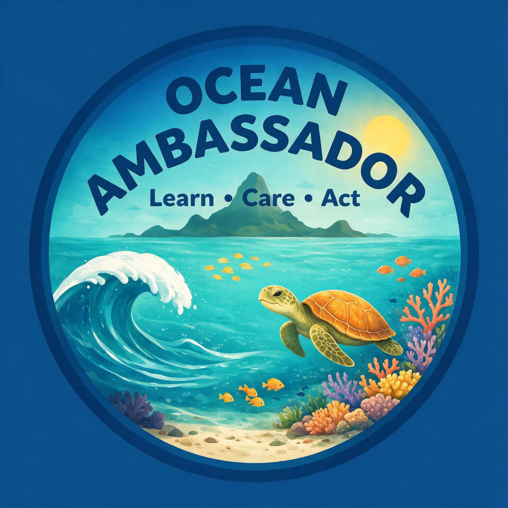
WHY OCEANLINK?
The ocean is much more than water. It is home to extraordinary biodiversity, supports livelihoods, influences our climate and helps protect our coastlines.
The ocean connects countries, communities and generations.
Understanding the ocean is the first step towards protecting it.
Small actions, multiplied across communities, can create meaningful change.
DIVE IN
Explore the ecosystems, species and challenges that make our ocean extraordinary.
Discover the colourful cities beneath the sea.
Meet the fascinating creatures of our oceans.
Discover nature's coastal guardians.
Understand how pollution affects marine life.
Learn how climate change affects our oceans.
Discover responsible ways to use marine resources.
EXPLORE
Coral reefs are among the most remarkable ecosystems on Earth. Built by tiny coral animals called polyps, reefs create complex habitats where many marine species can live, feed and reproduce.
EXPLORE
The ocean is home to an extraordinary variety of life, from microscopic organisms and colourful reef fish to sea turtles, dolphins and whales. Every species plays a role in maintaining healthy marine ecosystems.
EXPLORE
Mangrove forests grow along tropical and subtropical coastlines. Their roots provide shelter for young marine animals while helping protect coastal areas from erosion.
UNDERSTAND
Plastic, chemicals, wastewater and other forms of pollution can damage marine habitats and threaten wildlife. Preventing waste from reaching rivers, beaches and the ocean is an important part of the solution.
UNDERSTAND
The ocean absorbs heat and interacts continuously with the atmosphere. Climate change is contributing to ocean warming, rising sea levels and other changes that can affect marine ecosystems and coastal communities.
TAKE CARE
Fishing provides food, livelihoods and cultural value for many communities. Sustainable fishing aims to use marine resources responsibly while allowing fish populations and ecosystems to remain healthy.
PLAY • EXPLORE • LEARN
Look carefully, identify the problems and discover how our actions can help protect the marine environment.
TEST YOUR OCEAN KNOWLEDGE
Challenge yourself, discover new facts and learn how we can protect our marine environment.
Test your knowledge of ocean pollution and the protection of our lagoons.
Put your ocean knowledge to the test with the OceanLink quiz.
FROM EXCHANGE TO ACTION
The Youth Ambassadors experience opened a door to new ideas, new friendships and new perspectives. OceanLink is one way of bringing those lessons home.
Growing up surrounded by the ocean creates a special connection with our marine environment. Our beaches, lagoons, reefs and coastal communities are part of everyday life.
The Youth Ambassadors Programme brought young people together to learn, exchange ideas, understand different cultures and develop leadership skills.
Visiting the United States created opportunities to see new approaches to education, communities, leadership and environmental awareness.
Every journey brings lessons home. Learning about people, places and environmental challenges can inspire young people to think about what they can do in their own communities.
OceanLink turns inspiration into action by encouraging young people, families, schools and coastal communities to learn about the ocean and help protect it.
HER STORY
A Youth Ambassadors experience became the inspiration behind OceanLink.
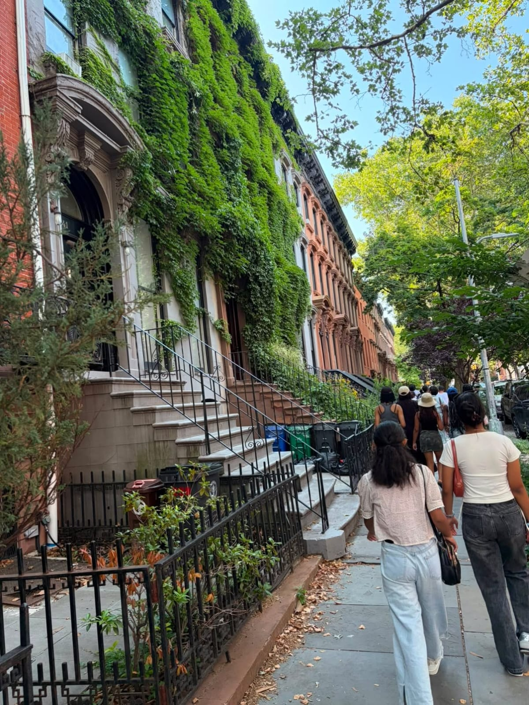
Discovering New York City.WHY I WENT
I wanted to develop my leadership skills, gain international exposure and acquire practical experiences that could contribute to my personal development and future study plans.
The Youth Ambassadors experience became much more than a journey abroad. It gave me opportunities to learn about civic engagement, community service and the ways young people can contribute positively to society.
I discovered remarkable places and landmarks, including The Capitol, Broadway, Vermont, New York and Washington.
New York and Washington impressed me the most. I was fascinated by the warmth and welcoming attitude of the people, their spontaneity and open-mindedness, as well as the combination of natural and man-made environments.
The high-rise buildings, bridges, busy streets and unique atmosphere created experiences that were very different from what I was accustomed to.
I enjoyed discovering American foods and trying burgers, pizzas, pretzels and Starbucks drinks.
Visiting flower markets, kayaking and swimming near the Statue of Liberty, and visiting an ice-cream manufacturing plant were among the experiences that made the journey unforgettable.
One of the most enriching aspects of the programme was interacting with participants from diverse cultural and social backgrounds.
Sharing experiences and learning from one another helped me become more open-minded and globally aware.
My stay in Vermont with my host family, the Roskins, was another memorable experience. Their home was surrounded by forests, which was quite unusual for me — and the thought of bears being around made the experience even more memorable!
Travelling by plane for the very first time was itself an unforgettable experience.
During the flight from Paris Charles de Gaulle to Washington, I looked through the window and saw the vast blue Atlantic Ocean below. It was mesmerising and inspiring.
That view made me think about the challenges facing our oceans — pollution, overfishing, fossil-fuel use and the threats facing marine ecosystems.
Mauritius, as an island nation surrounded by the sea, has a particularly strong connection with the marine environment.
WHY OCEANLINK?
I felt that creating a platform to mobilise opinions, raise awareness and sensitise people towards marine protection and preservation was a meaningful way to bring my experience home.
That idea became OceanLink.
MY EXPERIENCE
The Youth Ambassadors experience was about more than travelling. It was about meeting people, discovering new perspectives and bringing those experiences home.
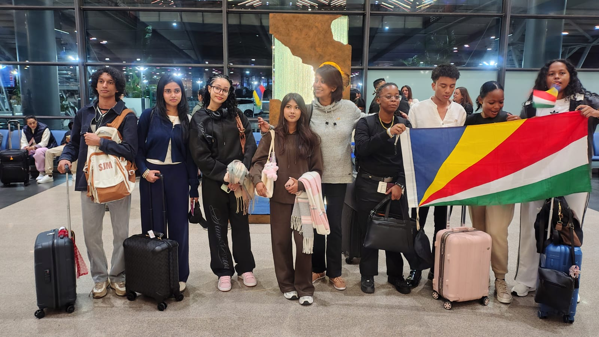
Meeting young people from different backgrounds created opportunities to share ideas, cultures and experiences.
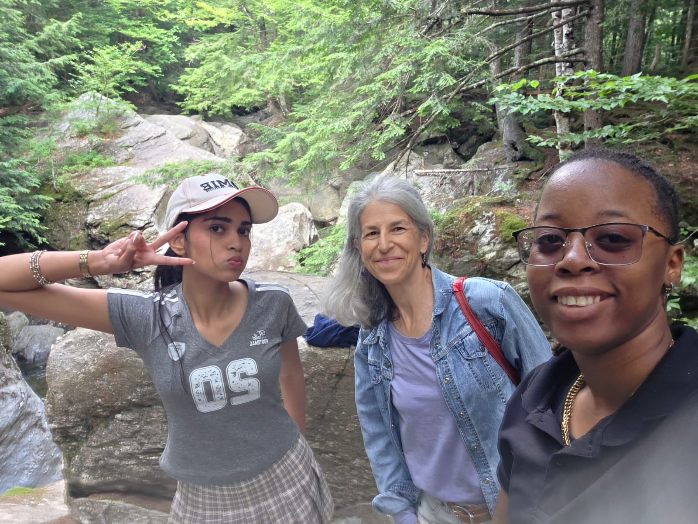
Every new place brought something different to discover and remember, especially with the host family.
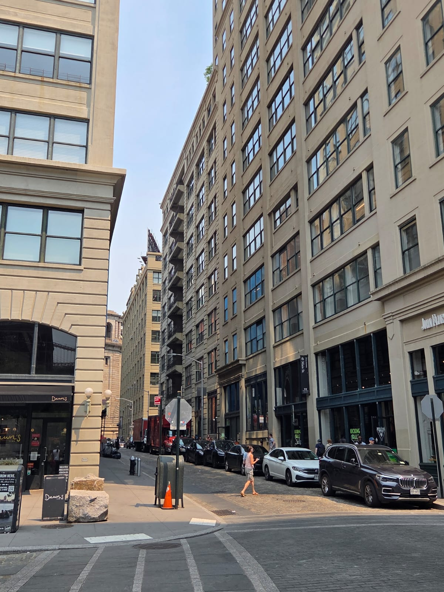
Discovering the streets, buildings and everyday life of New York City.
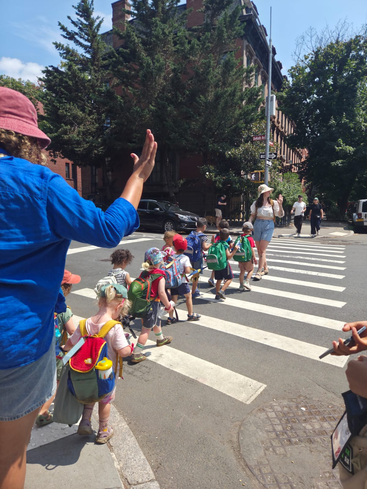
Travel is also about observing the people, communities and everyday moments around us.
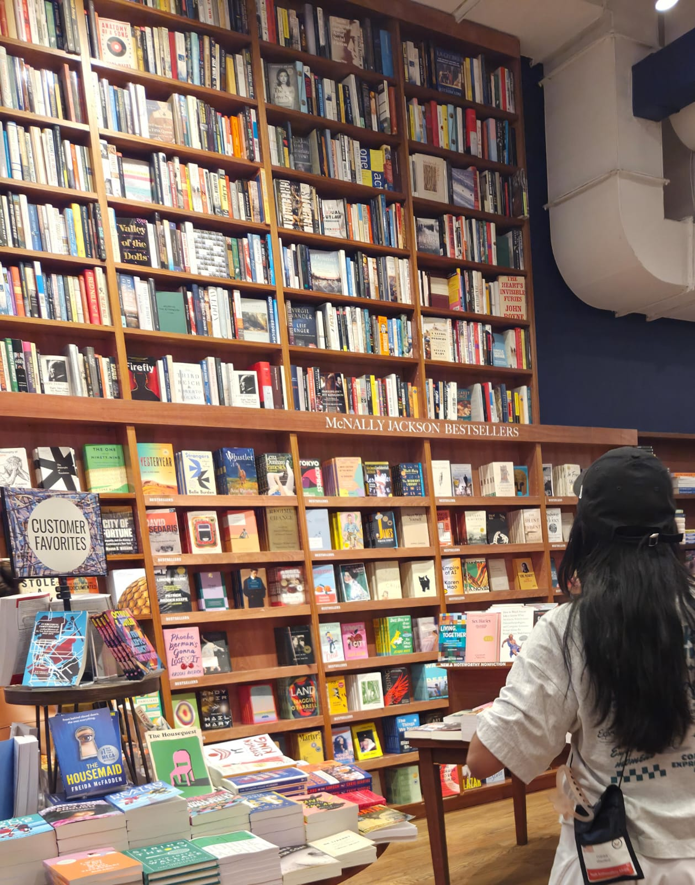
Books and new environments can open doors to different ideas and perspectives.
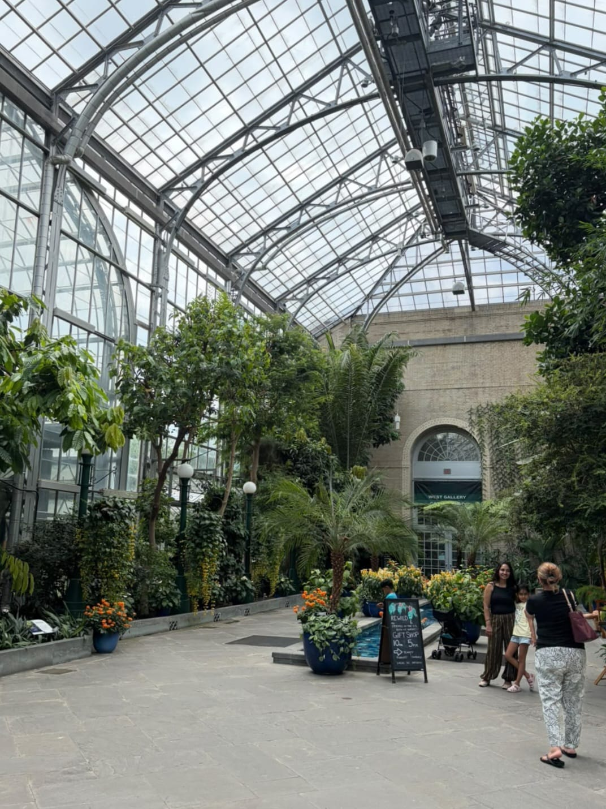
Experiencing beautiful natural spaces can remind us of the importance of protecting our environment.
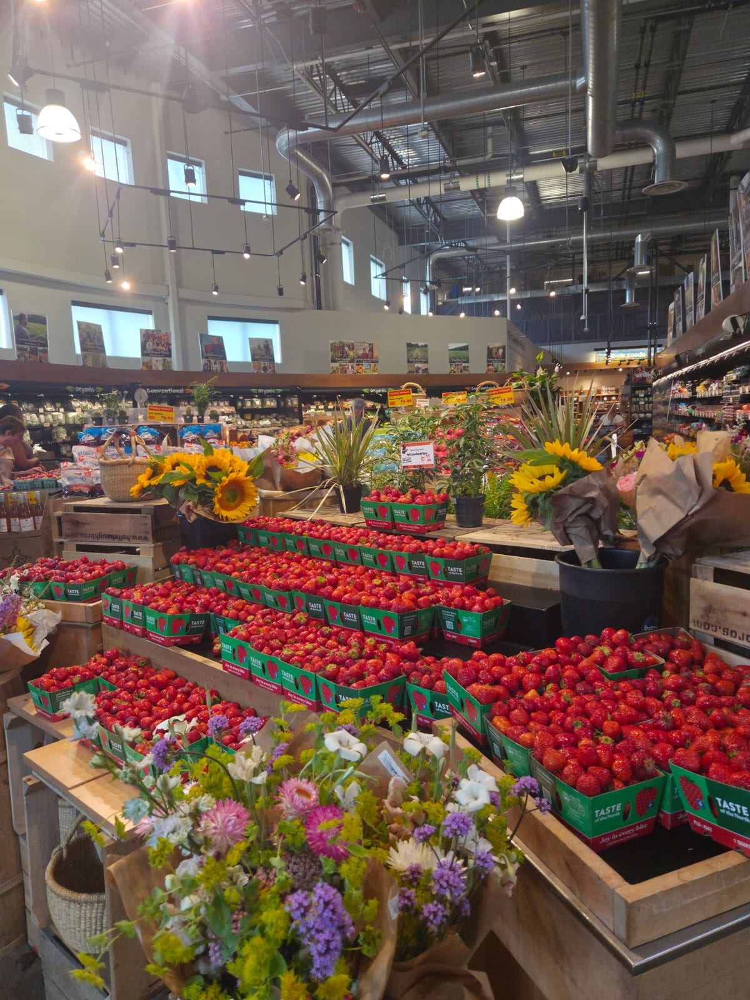
Different places reveal different cultures, foods, people and ways of life.
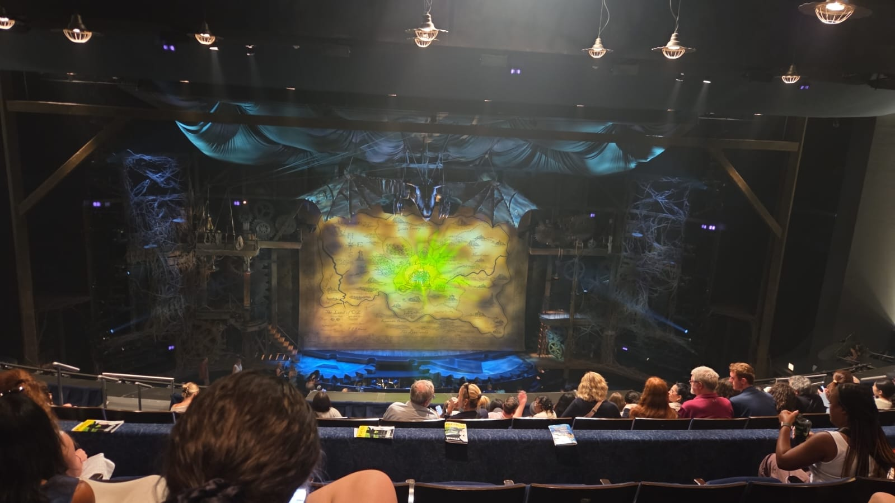
Cultural experiences can inspire creativity, curiosity and a deeper understanding of others.
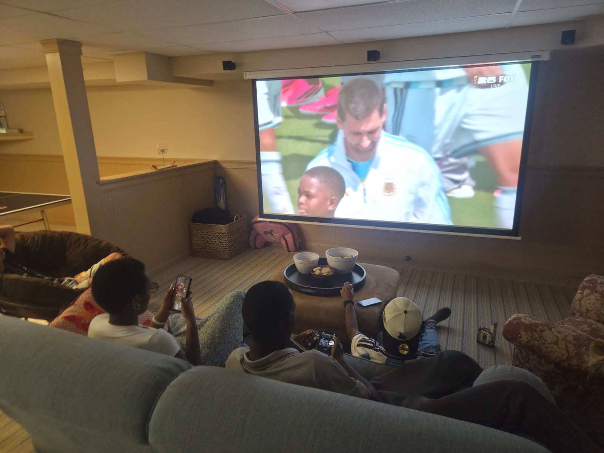
Friendship and shared experiences can become some of the most memorable parts of a journey.
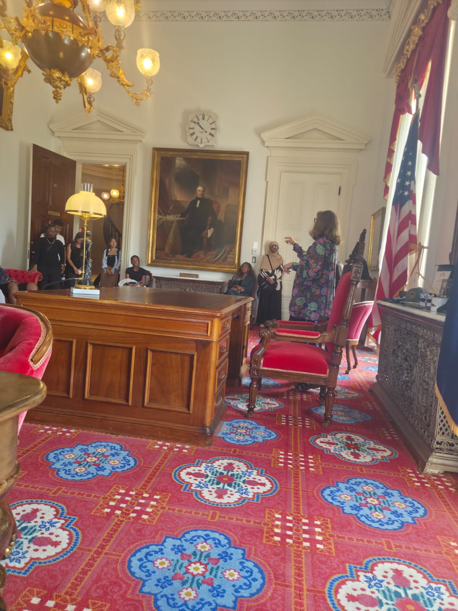
Visiting different places can help young people understand communities, leadership and civic life.
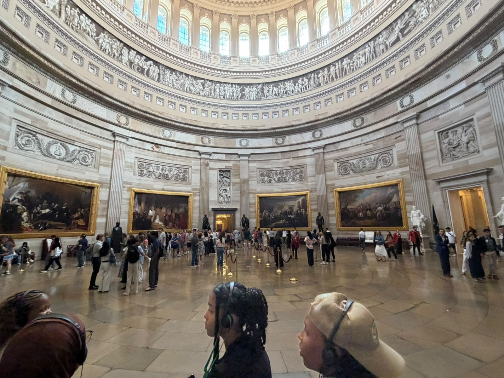
Exploring historic places provides opportunities to learn from the past and think about the future.

Exploring New York City was another memorable part of the Youth Ambassadors experience.
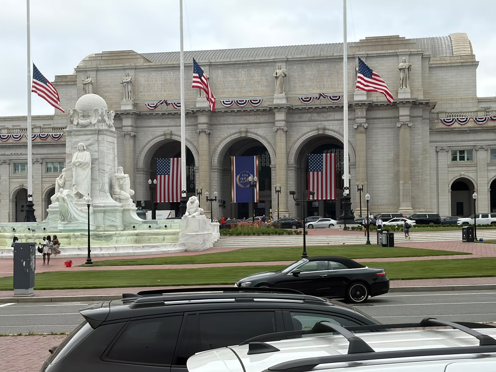
Every destination adds another chapter to the story of a journey.
Meeting other young people created opportunities to share ideas, cultures and experiences.
TAKE ACTION
Protecting our ocean doesn't always require big changes. Every responsible choice can make a difference.
OCEANLINK CHALLENGE
Take one simple action each day to help protect our ocean.
OCEANLINK PLEDGE
I will learn about our marine environment, make responsible choices and encourage others to care for the ocean.
MY OCEAN PROMISE
Choose the actions you would like to make part of your everyday life.
Select the commitments that speak to you. There is no need to choose them all.
OCEANLINK PROMISE
My choices can help protect marine ecosystems, support healthier coasts and inspire others to take action.
OCEANLINK
I will do my part to protect marine ecosystems, respect our coastal environment and encourage others to care for our oceans.
OCEAN GAMES
Learning about the ocean can be fun! Test your skills and help protect our marine environment.
GAME 01
Click on the litter to clean the beach.
THE OCEANLINK APPROACH
OceanLink believes that meaningful change begins with knowledge, grows through connection and becomes possible through action.
Understand our oceans, discover marine life and learn about the challenges facing marine ecosystems.
Recognise the connection between people, communities and the ocean that surrounds us.
Turn knowledge into practical actions that can help reduce pressure on marine ecosystems.
Encourage others to care, participate and become part of the movement for healthier oceans.
OCEAN KNOWLEDGE HUB
Explore the ecosystems, species and challenges that shape our ocean and coastal environment.
Discover these remarkable ecosystems and why they are so important to marine life.
Explore topic →Learn how mangrove forests protect coastlines and provide habitats for many species.
Explore topic →Explore underwater meadows that support marine life and healthy coastal ecosystems.
Explore topic →Meet some of the amazing animals and organisms that depend on healthy oceans.
Explore topic →Understand how waste and pollution can affect oceans, beaches and marine organisms.
Explore topic →Learn how a changing climate can affect coral reefs, oceans and coastal communities.
Explore topic →Discover why responsible fishing helps protect fish populations and marine ecosystems.
Explore topic →Explore how ocean resources can support people and economies while being used responsibly.
Explore topic →SELECT A TOPIC
Click on one of the topics above to discover more about our ocean and coastal environment.
The ocean covers more than 70% of our planet.
OCEAN AT A GLANCE
A few simple facts help us understand the importance of the ocean and the need to protect it.
The ocean covers more than 70% of Earth's surface.
Coral reefs provide habitat for about a quarter of marine species.
Marine ecosystems, especially microscopic organisms, play an important role in oxygen production.
Mauritius has an extensive coastline closely connected to its marine environment.
SOURCES & REFERENCES
OceanLink uses information from recognised government, scientific and educational sources to support ocean awareness and learning.
Information about Mauritius' coastal and marine environment, marine biodiversity, coral reefs, marine habitats and environmental protection.
Visit source ↗Official information on Marine Protected Areas in Mauritius and Rodrigues, including marine parks, marine reserves and fishing reserves.
Visit source ↗Information about coral reefs, marine habitats, biodiversity and the ecological importance of Mauritius' coastal environment.
Visit source ↗Information about coastal management, biodiversity conservation, coastal protection and sustainable management of coastal resources.
Visit source ↗Official background information about Mauritius, including its geography, coral reefs, coastal environment and protected areas.
Visit source ↗OceanLink brings together educational information, activities and awareness materials designed to encourage young people to learn, connect and act.
Educational content developed for OceanLink.Reliable information helps us understand our oceans and make informed choices about protecting them. OceanLink encourages everyone to explore, learn and continue discovering from trusted sources.
Mauritius is surrounded by a rich and diverse marine environment. From coral reefs and lagoons to mangroves and coastal communities, our ocean is part of who we are.
Click on a location to discover why these coastal areas are important and how we can help protect them.
Located in the southeast of Mauritius, Blue Bay Marine Park protects an important marine ecosystem rich in coral reefs and marine life.
OceanLink Tip: When visiting a marine park, observe marine life without touching corals or disturbing animals.
Balaclava Marine Park lies on the northeast coast of Mauritius and includes coral reefs, lagoon areas, sandy beaches, salt marshes and shoreline habitats.
OceanLink Tip: Keep plastics and other waste away from the shoreline and never leave fishing line or other equipment behind.
Pointe d'Esny is part of an important coastal and wetland environment in southeast Mauritius. Its coastal habitats support biodiversity and help connect land and marine ecosystems.
OceanLink Tip: Protect wetlands and mangroves. They provide valuable habitat and help connect coastal and marine ecosystems.
The southwest coast of Mauritius contains important coastal and marine habitats. The Le Morne area is also closely connected with local communities, tourism, recreation and the natural environment.
OceanLink Tip: Enjoy the coast responsibly and leave beaches, reefs and coastal habitats as you found them.
FUN FACT
Coral reefs are built by tiny animals called coral polyps.
Mauritius is surrounded by an extraordinary marine environment. Coral reefs, lagoons, mangroves, seagrasses and coastal habitats provide homes for many forms of marine life.


Explore some of Mauritius' important coastal and marine locations. Click a marker to discover more.
📍 Click the markers to explore OceanLink locations.
Marine Protected Areas help conserve marine biodiversity and important habitats. In Mauritius, these include Marine Parks and Fishing Reserves.
Whether you live near the coast, visit the beach or simply enjoy the ocean, your actions can make a difference.
Take Action →TEST YOUR KNOWLEDGE
Think you know the ocean? Put your knowledge to the test.
TAKE ACTION
You don't have to be a scientist to make a difference. Start where you are.
Reduce waste and avoid unnecessary single-use plastics.
Take your rubbish home and respect marine life.
Inspire your friends and start an ocean-awareness project.
Join clean-ups and encourage others to protect our coast.
JOIN THE MOVEMENT
Learn. Connect. Act. Make a promise to help protect our oceans.
Take the OceanLink Pledge →